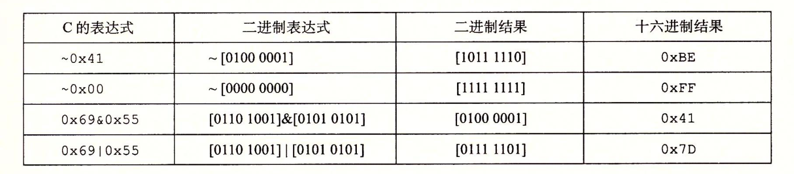
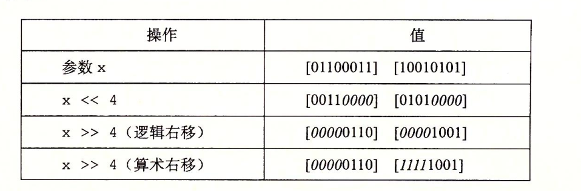

信息的表示和处理（上）
字节顺序 ： 大端和小端
小端法：最低有效字节在前。十进制数：12345，二进制：39 30 00 00
大端法：最高有效字节在前。十进制数：12345，二进制：00 00 30 39
不同类型的机器通过网络传送二进制数据时，一个小端法机器产生的数据被发送到大端法表示的机器中时，接受到的数据就是反序的。网络应用程序的代码编写必须遵守已建立的关于字节顺序的规则，接收方机器会将网络标准转换为它的内部表示。
布尔运算，位运算，移位运算
逻辑运算：C语言中（||、&&和!），对应OR、AND和NOT运算
位运算：|就是OR（或），&就是AND（与），~就是NOT（取反），^就是EXCLUSIVE-OR（异或）

位运算和逻辑运算区别：
- 在参数被限制为0和1时位运算和逻辑运算有相同的行为
- 逻辑运算会短路
移位运算：
- 逻辑右移：在左端补0
- 算数右移：在左端补n个最高有效位的值
- 左移：丢弃最高的n位，并在右端补n个0
JAVA中x>>k为算数右移，x>>>k为逻辑右移

在java中如果移动位数为k（移动位数） mod w（数据类型长度），例如对一个int类型移位36，则36 mod 32 = 4，实际移动4位。
加减法的优先级高于移位运算。
无符号数：
大于等于0的数。一个n位的无符号数能表示的最小值为0，最大值为2^n-1.例如8位无符号数能表示的范围是0~255。
有符号数：
n位有符号数能表示的范围：-2^（n-1）~ 2^（n-1）-1。8位有符号数能表示的范围是-128 ~ 127
补码计算：
例如：1011= -1 * 2^3 + 0 * 2^2 + 1 * 2^1 + 1 * 2^0 = -5